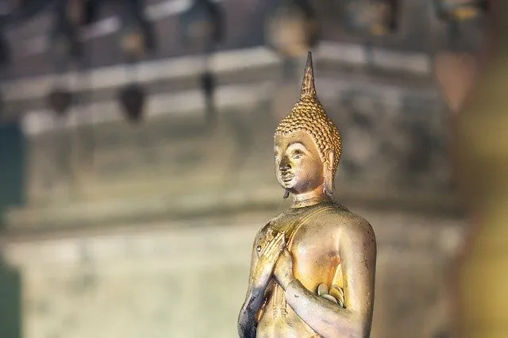

La historia del yoga merece ser escuchadas por todos y todas quienes resuenen con esta disciplina. Sin embargo, es pertinente contextualizar aquellos sucesos y adaptarlos a cada grupo, como lo es el caso de la infancia, quienes necesitan conocer dicha historia de manera lúdica, simple y atractiva.
Todos y todas sabemos que el Yoga tiene múltiples beneficios tanto para adultos como para la infancia, pero pocas veces sabemos de su historia y de la relevancia de ella para comprender y valorizar mucho más su trascendencia. Es importante también, además de compartir la historia, cuidar y comunicar la esencia del yoga para así colaborar en su permanencia respetada.
A continuación te comparto un bello relato para utilizar en tus clases de yoga con niños y niñas:
Cuento El príncipe Buda. Mariela Maleh y Daniela Méndez.
En la historia hay personaje llamado Buda. Era un príncipe, vivía en un hermoso palacio lleno de comodidades y lo tenía todo: fortuna, lujos y cada cosa que quería, pero se sentía triste. Sus días no tenían sentido. Hacía sus rutinas cotidianas, aunque se aburría…
Le faltaba lo más importante, descubrir por qué había venido a este mundo, para qué. Así fue como un día se llenó de coraje y tomó una decisión: descubrir por él mismo cuál era su misión. Se fue al bosque con lo mínimo indispensable para caminar y tratar de encontrar la respuesta. De esta manera descubrió el placer de caminar descalzo, sentir la tierra en sus pies y observar los árboles, sus frutos, los ríos y la simpleza de la vida en la naturaleza.
Una mañana se sentó bajo un árbol y se puso a observar el lago, sus movimientos y cómo lo iluminaba el brillo del sol. Cuando él se concentraba en observar, se entregaba a ese momento, sin darse cuenta de cuánto tiempo pasaba. Descubría cómo volaban los pájaros, cómo era el orden de la naturaleza, lo que ocurría en el día cuando resplandecía el sol y en la noche cuando las estrellas brillaban.
Un día se acercó una persona, lo miró y simplemente se sentó a su lado, y meditaron juntos. No hablaban pero se hacían compañía. Uno sentía la presencia del otro compartiendo el silencio. Cuando llegó la noche, se acostaron y se pusieron a observar las estrellas. Ellos se sentían tranquilos, sorprendidos, admirados de lo hermoso que estaba el cielo con las estrellas. En ese momento, se acercó otra persona y comenzó a preguntarles qué hacían, por qué estaban tan concentrados y se les veía tan contentos.
Buda le respondió: – únete a nosotros y lo descubrirás.
Los tres compartían ese momento especial y de repente Buda lo comprendió todo. En ese instante mágico descubrió que la vida era simple y que su misión era funcionar así de simple como se lo estaba mostrando este mundo natural.
Así que Buda se levantó, se despidió de sus nuevos amigos y decidió volver a su palacio. La vida ahora sería diferente, estaría llena de sentido, podría disfrutar de su lugar y su gente, pero de una manera distinta.”
Además aquí van otras sugerencias de lecturas que puedes utilizar y que pueden convertirse en gran fuente de inspiración:
- Cuento La Lechuza y la Mariposa. Cayetana Rodenas.
- Yoga. Miryam Raventós y María Girón.
- Cuento El Secreto de la Felicidad.